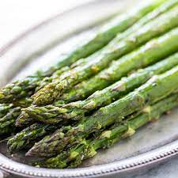

Roasted Asparagus
Ingredients
- Asparagus
- Half stick of butter
- Garlic salt to taste
Directions
- Preheat oven to 425oF.
- Spread asparagus over baking sheet evenly.
- Sprinkle garlic salt to taste over the asparagus.
- Cut butter into cubes and place on top of the aspargus evenly distributed.
- Place in oven and cook until desired tenderness.